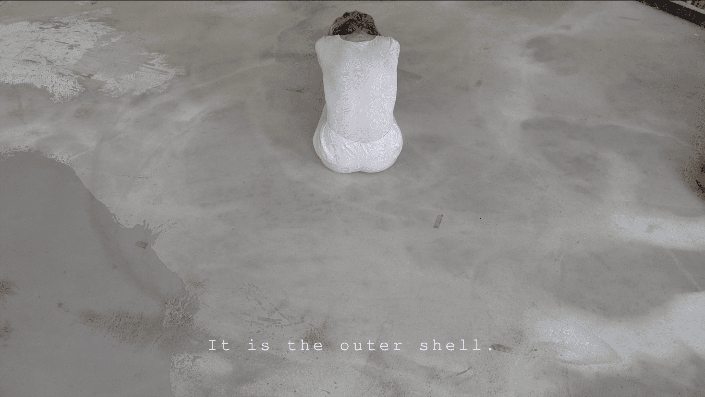
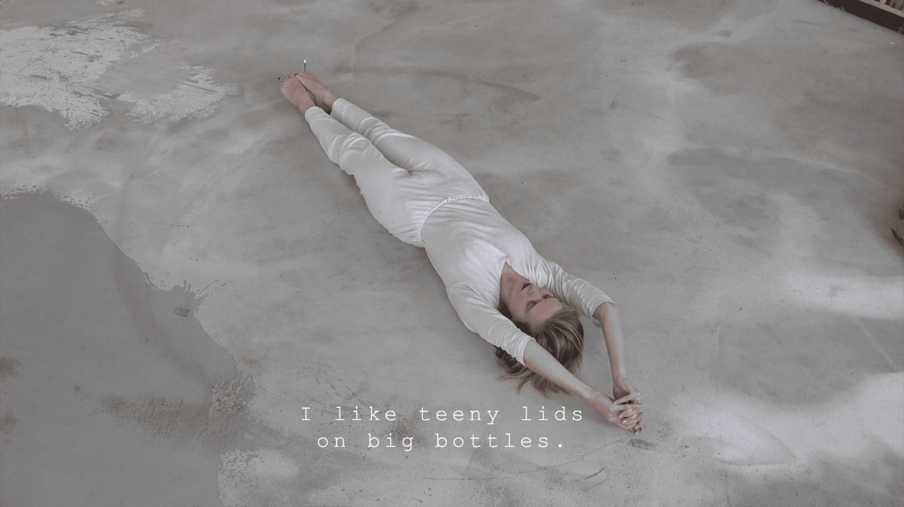
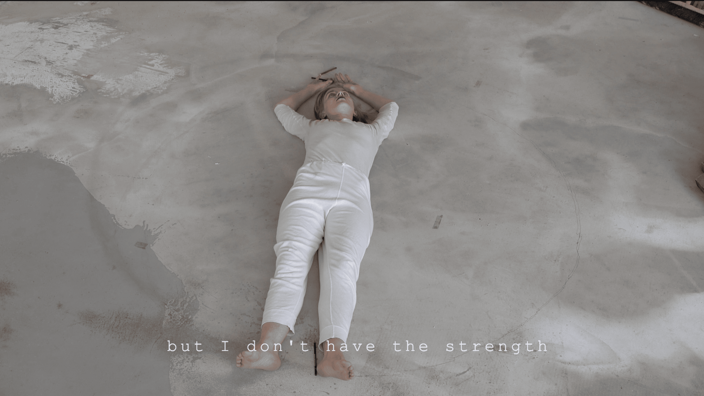
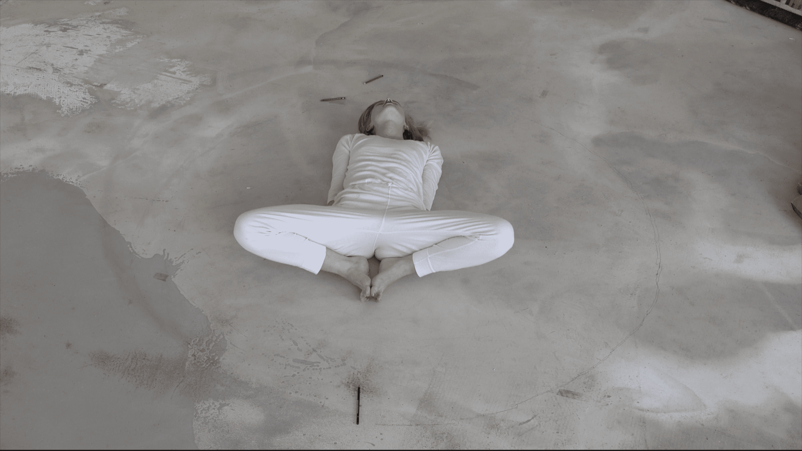

GAP
2019
Experimenteller Kunstfilm, 00:05 min

Sprecherin: Molly McLellan
Konzept: Donata Schmidt-Werthern
Performer*in: Donata Schmidt-Werthern
Videoaufnahme: Donata Schmidt-Werthern
Die Performance „gap“ ist eine Arbeit über die Herausforderung der Kommunikation in einer Beziehung und der Hoffnung, dass wir immer wieder zusammen kommen. Eine Umdrehung findet statt, der sehnsuchtsvolle Wunsch existiert, dass der Anfang sich mit dem Ende verbindet.


